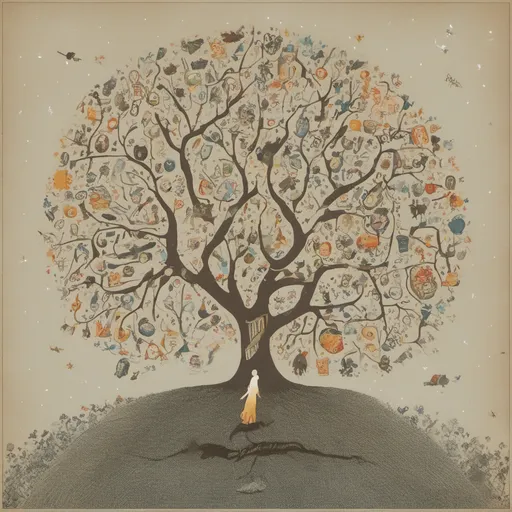
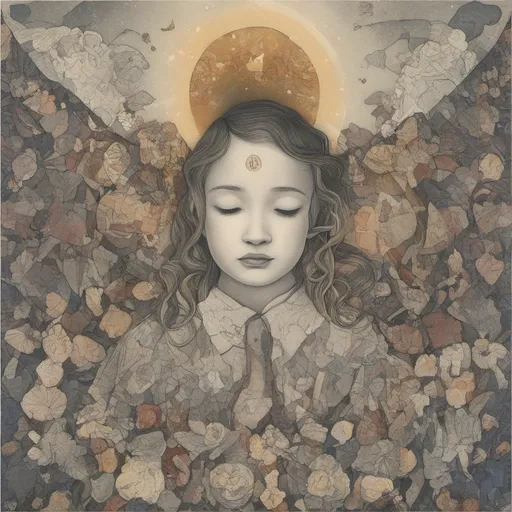
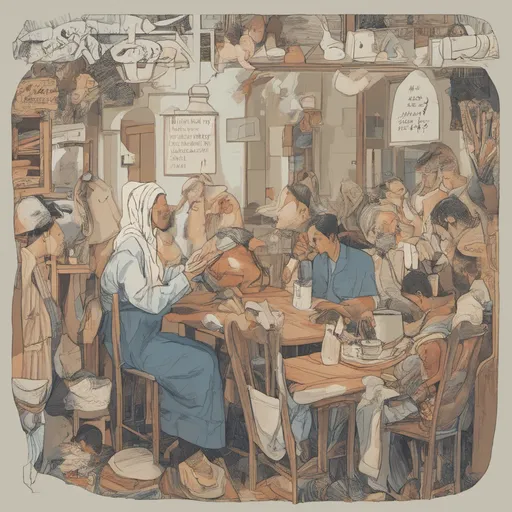

AI에게 '가치있고 의미있는 삶（a valuable and meaningful life）을 묘사해달라고 해봤다.
어떤 그림이 나올까?

<제목 : 바다 그리고 삶>
레오나르도 AI에게 그림을 부탁했더니 이런 그림이 나왔다.
삶과 세상을 드넓은 망망대해로 표현했으며, 하늘에 떠있는 만발한 꽃들로 이상을 표현한듯해보인다.

<제목 : 욕망의 가지>
플레이그라운드에 그림을 부탁했더니 이런 그림이 나왔다.
사람은 집, 자동차, 가구, 옷, 보석, 사랑, 권력 등등 다양한 것들을 추구하며 갈망하지 않는가. 이것을 나무로 표현했다.
또한 인간은 시간의 유한성에 갇혀있는, 죽음에 이를 수 밖에 없는 존재임을 암시하는 듯한 갈라진 틈 사이에 뼈들이 보인다.

<제목 : 기도>
나 자신을 내려놓고 그분을 위해 헌신하고 희생하기로 선택한 삶을 어느 누가 가치 없고 의미 없다고 부정할 수 있을까.
경건한 마음으로 그분을 향하여, 한걸음 한걸음 나아가는 삶과 그러한 자세는 AI가 봐도 가치있고 의미있는 삶이었나보다.
<제목 : 기도>
나 자신을 내려놓고 그분을 위해 헌신하고 희생하기로 선택한 삶을 어느 누가 가치 없고 의미 없다고 부정할 수 있을까.
경건한 마음으로 그분을 향하여, 한걸음 한걸음 나아가는 삶과 그러한 자세는 AI가 봐도 가치있고 의미있는 삶이었나보다.

<제목 : 일상>
사람은 원하는 바를 이루기 위해 열심히 살아간다.
하지만 정작 중요한 것은 일상의 소소한 기쁨과 행복이라는 것을 잊고 산다.
잠시 쉬면서 가볍게 시와 소설을 읽는 것, 커피 한잔의 여유를 즐기는 것, 가족 그리고 친구들과 더불어 시간을 보내며 추억을 쌓는 것.
그것이야 말로 진정으로 가치있고 의미있는 삶이다라고 AI도 말하고 싶은 것이 아닐까.
꿈보다 해석이지만.
AI에게 가치 있고 의미있는 삶을 그려달라고 해봤다.
나름 재밌고 예쁜 그림들이라 한번 주저리 주저리 혼자 넉두리 하듯 써봤다.
이렇게 예쁘고 좋은 그림들을 손가락질 몇번이면 그릴 수 있는 세상이 되었다는 것이 놀랍다면 참 놀랍다.
후원댓글 6개
댓글 6개 ▼